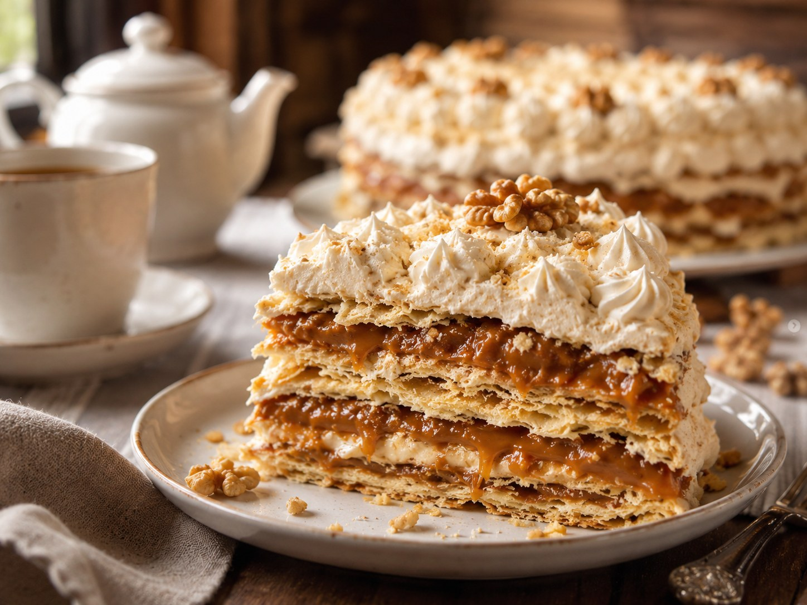
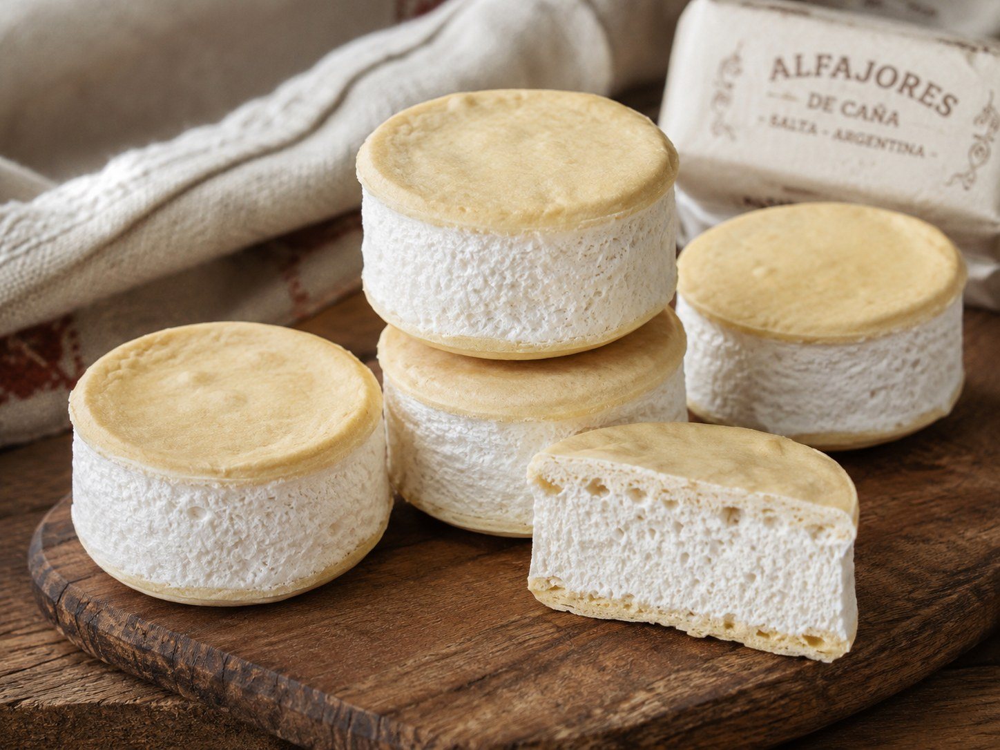
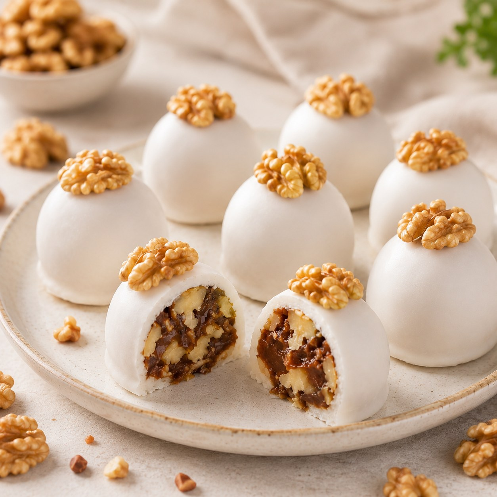

Turrón salteño
Capas finas y crocantes, dulce de leche, nueces regionales y una corona de merengue.
Ver detalleListado de recetas inspiradas en la pastelería del norte argentino, con detalles completos de especialidades destacadas.

Capas finas y crocantes, dulce de leche, nueces regionales y una corona de merengue.
Ver detalle
Masitas sequitas por fuera, con mucho dulce de leche por dentro y cubierta de glasé.
Ver receta

Tapitas finas con anís y un relleno merengado preparado con miel de caña.
Ver receta
Pastelitos regionales de masa tierna, rellenos con dulce de cayote y cubiertos con blanqueo.
Ver receta
Mitades de nuez unidas con dulce de leche y cubiertas con fondant blanco.
Ver receta
Tarta agridulce tradicional de bodas del NOA, con relleno especiado y cobertura de merengue.
Ver receta